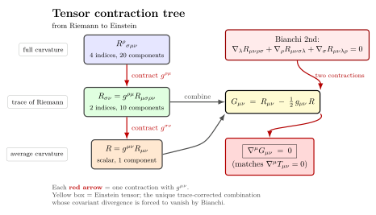

为什么 Einstein 张量是这个组合?
上一节我们让两条相邻的自由下落世界线"互相靠近"或"互相分开", 把这个相对加速度装进 Riemann 张量 $R^\rho{}_{\sigma\mu\nu}$. 它有四个指标, 像一只多触角的章鱼, 在四维时空里有 20 个独立分量 (减去对称性后). 这是整个曲率信息. 但 Einstein 写下场方程时, 等号左边只有两个指标的对象 — 因为右边的能动量张量 $T_{\mu\nu}$ 也只有两个指标. 物质把它的能量、动量、压强 (以及它们的流) 装进 $T_{\mu\nu}$, 时空只能用一个同样形状的张量去回应. Einstein 经过几年的尝试, 最终在 1915 年 11 月写定的形式是
$$ G_{\mu\nu}\equiv R_{\mu\nu}-\tfrac{1}{2}g_{\mu\nu}R=\frac{8\pi G}{c^4}\,T_{\mu\nu}. $$
本节的任务是把这个左边一字一字地拆开来看: $R_{\mu\nu}$ 是怎么从 $R^\rho{}_{\sigma\mu\nu}$ 缩并得到的, $R$ 又是怎么进一步缩并的, 而 $-\tfrac{1}{2}g_{\mu\nu}R$ 那一项必须加进来 — 不加, $\nabla^\mu T_{\mu\nu}=0$ 就保不住. 这个数学事实就是 Bianchi 第二恒等式.
一、从 4 个指标到 2 个: Ricci 张量
Riemann 张量 $R^\rho{}_{\sigma\mu\nu}$ 在四维时空里有 20 个独立分量, 它对前两对指标反对称, 对两对的对换对称, 还满足第一 Bianchi 恒等式 $R^\rho{}_{[\sigma\mu\nu]}=0$. 这些约束把 $4^4=256$ 个分量压到 20 个. 现在我们关心一个比"全部曲率"更粗的量: 把第一个上指标和第三个下指标缩并, 即让度规自己挑出某个方向, 看曲率沿那方向的总和. 这就是 Ricci 张量:
$$ R_{\sigma\nu}\equiv R^{\rho}{}_{\sigma\rho\nu}=g^{\rho\mu}R_{\mu\sigma\rho\nu}. \tag{1} $$
它对 $\sigma$ 和 $\nu$ 是对称的 (用 Riemann 张量的对称性容易验证), 所以在 4 维里有 $4\cdot 5/2=10$ 个独立分量. 物理上, $R_{\mu\nu}$ 度量的是"一束自由下落粒子, 总体上是被聚焦还是散开" — 这是 Raychaudhuri 方程里的核心量. 把它和能量条件挂起来, 你立刻知道为什么 $R_{\mu\nu}u^\mu u^\nu\ge 0$ (强能量条件) 等价于"引力总是吸引性的", 也就是 Penrose-Hawking 奇点定理的能量假设.
从 $R_{\mu\nu}$ 再缩并一次, 用度规的逆 $g^{\mu\nu}$ 把两个下指标拉成一个标量, 就得到 Ricci 标量:
$$ R\equiv g^{\mu\nu}R_{\mu\nu}. \tag{2} $$
它是一个纯粹的标量, 在每一点上是一个数. 在 2 维流形上, $R$ 等于 2 倍的 Gauss 曲率 — Gauss 在 1820 年代研究曲面时定义的那个 $K$. 在更高维, $R$ 仍是所有方向的平均曲率的某种和. 球面 $S^2$ 半径 $a$ 的 $R=2/a^2\gt 0$; 鞍面局部 $R\lt 0$; 平直空间 $R=0$.
用一个具体数字感受: 半径 $a=6.378\times 10^6\,\mathrm m$ 的地球表面 (当作纯几何二维球), $R\approx 2/a^2=4.92\times 10^{-14}\,\mathrm m^{-2}$. 这就是为什么在地球表面"小范围内看上去就像平面" — 曲率半径是 6000 公里量级, 远超你的实验室. 把这个量级和恒星表面比: 太阳半径 $R_\odot=6.96\times 10^8\,\mathrm m$, 表面上 (当作球面) $R\approx 4.13\times 10^{-18}\,\mathrm m^{-2}$, 还要更平. 当然真实的引力场需要 4 维 Schwarzschild 度规, $R$ 不是这样算; 这里只是借球面这个 toy model 示意一下"$R$ 是个数" 的事实.
另外一件常见的混淆: Ricci 张量看上去只是 Riemann 的"迹", 似乎只是后者的副产品. 但物理上恰好相反 — 在 GR 里, 物质的能动量直接通过 Ricci 部分耦合到几何, Riemann 张量减掉 Ricci 那部分剩下的"无迹核"叫 Weyl 张量, 它在真空里仍可以非零, 负责潮汐与引力波. 一句话: Ricci 是物质让时空弯的部分, Weyl 是即使没有物质也可以传播的几何信号. 这种"trace + traceless"的拆分在第 14 节讲引力波时还会再用一次.
二、为什么是 $R_{\mu\nu}-\tfrac{1}{2}g_{\mu\nu}R$, 不是 $R_{\mu\nu}$?
读者可能会想: 既然 Ricci 张量也是 2 指标对称, 形状和 $T_{\mu\nu}$ 一样, 直接写
$$ R_{\mu\nu}=\kappa\,T_{\mu\nu} $$
不就好了? Einstein 在 1913–1915 年间一度就是这么试的 ("Entwurf 理论"). 但有一个致命问题: 物质的能动量张量必须满足局部守恒
$$ \nabla^\mu T_{\mu\nu}=0, $$
这是 SR 的 $\partial^\mu T_{\mu\nu}=0$ 在曲时空里的推广 — 它直接来自 $T_{\mu\nu}$ 是物质的能量动量流, 在没有外部源时必守恒; 等价地, 它是物质拉氏量在时空平移下的 Noether 流 (在弯时空里这个"平移"是用度规和协变导数表达的). 如果场方程左边是 $R_{\mu\nu}$, 那你必须保证 $\nabla^\mu R_{\mu\nu}=0$. 但是这不一般成立. 这就是 Entwurf 理论的破绽 — Einstein 在 1915 年 11 月四个星期内连发四篇论文, 反复折腾就是在修这个 bug.
那么什么张量的协变散度恒为零? 答案藏在 Bianchi 第二恒等式里. 这是 Riemann 张量满足的一个微分恒等式, 对任何度规都成立, 不假设任何场方程:
$$ \nabla_\lambda R_{\mu\nu\rho\sigma}+\nabla_\rho R_{\mu\nu\sigma\lambda}+\nabla_\sigma R_{\mu\nu\lambda\rho}=0. \tag{3} $$
它是连接的"$d^2=0$"的张量化身: Riemann 张量是连接的曲率二形式, 满足 $dR=0$ 的伴随版本. 对它两次缩并 — 先用 $g^{\mu\rho}$ 把第一对的"上"指标拉出来, 让 $R_{\mu\nu\rho\sigma}\to R_{\nu\sigma}$ 等等; 经过仔细的指标记账 (这一步是教科书里大家做一遍就忘的代数练习), 结果是
$$ \nabla^\mu R_{\mu\nu}=\tfrac{1}{2}\nabla_\nu R. $$
把它移项, 写成
$$ \nabla^\mu\!\left(R_{\mu\nu}-\tfrac{1}{2}g_{\mu\nu}R\right)=0. \tag{4} $$
这就是缩并 Bianchi 恒等式. 它告诉我们: Ricci 张量本身的散度不是零, 但 $R_{\mu\nu}-\tfrac{1}{2}g_{\mu\nu}R$ 这个特定组合的散度恒为零 — 不管什么度规、什么物理情景. 把它叫做 Einstein 张量:
$$ G_{\mu\nu}\equiv R_{\mu\nu}-\tfrac{1}{2}g_{\mu\nu}R. $$
它和 $\nabla^\mu T_{\mu\nu}=0$ 完美匹配: 让场方程是 $G_{\mu\nu}=\kappa T_{\mu\nu}$, 两边自动满足同一个守恒. 如果换成 $R_{\mu\nu}=\kappa T_{\mu\nu}$, 两边的散度对不上, 物理上就违反能量守恒. 这就是为什么左边必须是这个特定组合. Einstein 在 1915 年 11 月 25 日 (Hilbert 几乎同时, 见后) 找到这个组合, 立刻用它算 Mercury 的近日点进动, 数字 43"/世纪 严丝合缝, 他在给好友 Sommerfeld 的信里说"几天里像疯子一样高兴".
顺便说一句, 还可以加一项 $\Lambda g_{\mu\nu}$, 它的协变散度也是零 (因为 $\nabla_\rho g_{\mu\nu}=0$). 所以最一般的"散度为零的 2 指标对称张量, 至多含度规与其二阶导"是
$$ G_{\mu\nu}+\Lambda g_{\mu\nu}=R_{\mu\nu}-\tfrac{1}{2}g_{\mu\nu}R+\Lambda g_{\mu\nu}. $$
Lovelock 1971 年证明: 在 4 维, 这就是唯一的可能 (假设至多二阶导, 张量, 对称, 散度自由). 这个定理把 GR 的左边几何那部分锁死了, 不留 wiggle room. Einstein 的"猜"原来是被几何唯一决定的.
三、缩并树: 从 Riemann 到 $G$ 的指数收缩
右图把这条逻辑画成一棵"指数收缩树": 顶端是 4 指标的 Riemann $R^\rho{}_{\sigma\mu\nu}$, 它把整个曲率信息装在里面; 第一次缩并把第一上指标与第三下指标用 $g^{\rho\mu}$ 缩到一起, 落到 2 指标的 Ricci $R_{\mu\nu}$ — 这是 Riemann 的"迹"; 第二次缩并再用 $g^{\mu\nu}$ 把两个下指标也合并, 收到 0 指标的标量 $R$. 这条收缩链每一步都"丢失信息" (Riemann 20 分量 → Ricci 10 分量 → 标量 1 分量), 但每一步都给出一个干净的几何量.

那为什么 Einstein 张量是 $R_{\mu\nu}$ 减去 一半的 $g_{\mu\nu}R$, 不是 $R_{\mu\nu}-\tfrac{1}{4}g_{\mu\nu}R$ 或别的系数? 那个 $\tfrac{1}{2}$ 是从 Bianchi 恒等式做缩并后必然跳出来的: $\nabla^\mu R_{\mu\nu}=\tfrac{1}{2}\nabla_\nu R$, 系数恰是 $\tfrac{1}{2}$. 换别的系数, 散度就不是零. 这又是一个"看上去任意, 实际上几何唯一"的细节.
有读者会问: 既然 $G$ 就是 $R$ 的两次缩并加修正, 为什么不直接用 $R$? 因为 $R$ 是标量, 它没有指标, 没法跟 $T_{\mu\nu}$ 对应. 最简单的猜法是 $g_{\mu\nu}R=\kappa T_{\mu\nu}$, 但这在弱场极限退不回 Newton 引力, 也违反 Bianchi (除非 $\nabla R=0$, 这不对). 必须用张量级的 $G_{\mu\nu}$.
四、两个例子: Schwarzschild 真空与 de Sitter
例子 1, Schwarzschild 时空: 点质量 $M$ 外面的真空区域, 度规是 $\mathrm ds^2=-(1-r_s/r)c^2\,\mathrm dt^2+(1-r_s/r)^{-1}\mathrm dr^2+r^2\mathrm d\Omega^2$, $r_s=2GM/c^2$. 在这个区域里 $T_{\mu\nu}=0$, 所以场方程要求 $G_{\mu\nu}=0$. 这等价于 (取迹 $G^\mu_\mu=-R$, 在 4 维) $R=0$ 与 $R_{\mu\nu}=0$. Ricci 张量本身就是零, 但 Riemann 张量不是零 — 它的"非迹"那一部分仍编码着真空里的潮汐力. 这部分叫 Weyl 张量 $C^\rho{}_{\sigma\mu\nu}$, 是 Riemann 减去 Ricci 部分剩下的"无迹核". 在 Schwarzschild 里, Weyl 张量负责潮汐 (上一节讲过的 $\sim GM/r^3$), 而 Ricci 与 Einstein 张量都是零 — 它们只在物质处不为零.
这件事的物理含义: GR 真空区域的引力, 是Weyl 曲率, 不是 Ricci 曲率. 引力波在真空中传播, 也只携带 Weyl 部分; LIGO 探测到的 $h_{\mu\nu}\sim 10^{-21}$ 的微小应变, 它的源头是 Weyl 张量在远场的传播. 这一节我们先把 Ricci 与 $G$ 写清楚, Weyl 的细节留给后面引力波那一节.
例子 2, de Sitter 时空: 取真空但加一个宇宙学常数 $\Lambda$, 场方程变成 $G_{\mu\nu}+\Lambda g_{\mu\nu}=0$, 也就是
$$ G_{\mu\nu}=-\Lambda g_{\mu\nu}. $$
这是 Einstein 1917 年为了"做一个静态宇宙"硬塞进去的项. 取迹 $G^\mu_\mu=-R=-4\Lambda$, 即 $R=4\Lambda$ — 一个常数曲率时空. Ricci 张量也是常数: $R_{\mu\nu}=\Lambda g_{\mu\nu}$. 几何上, de Sitter 时空是 4 维"双曲面", 是相对论里"最对称的非平直时空". 数字: 当代宇宙学测到的 $\Lambda\approx 1.1\times 10^{-52}\,\mathrm m^{-2}$ (从 Planck 2018 + SNe Ia + BAO 联合拟合); 对应的 de Sitter 半径 $\ell=\sqrt{3/\Lambda}\approx 1.6\times 10^{26}\,\mathrm m\approx 17\,\mathrm{Gly}$, 这正是宇宙加速膨胀的特征尺度. 我们的宇宙在 $z\to 0$ 时正在向 de Sitter 渐近 — 这就是"暗能量主导阶段"的几何含义. 第 23 节还会回来讲.
这两个例子都体现 $G$ 守恒的力量: Schwarzschild 里 $G=0=T$ 自洽; de Sitter 里 $G=-\Lambda g$, 而 $\nabla^\mu(-\Lambda g_{\mu\nu})=0$ (因为 $\nabla g=0$), 守恒同样自动. 任何符合"散度自由"几何的左边, 都能配上"散度自由"的右边.
五、Bianchi 与 Hilbert: 一个被低估的同时发现
Bianchi 恒等式以意大利数学家 Luigi Bianchi 命名, 他在 1880 年代研究 Riemannian 几何时写下了它 (确切说, 是他在 1902 年的Lezioni di Geometria Differenziale里给出, 但其几何起源更早, 至少 Ricci-Curbastro 与 Levi-Civita 在世纪之交都用过). 这是纯几何的恒等式, 跟物理无关 — 任何流形的 Levi-Civita 连接都满足它. Einstein 在 1915 年最初没意识到这一点的重要性: 他在 11 月初的版本仍然把 $R_{\mu\nu}=\kappa T_{\mu\nu}$ 写成场方程, 然后发现 Mercury 进动算出来对了, 但守恒不严格 (他用了一个特殊的坐标条件 trace 调和). 11 月 25 日的最终版本, 他把 $-\tfrac{1}{2}g_{\mu\nu}R$ 加进去, 守恒就自动成立, 不再需要任何坐标选择.
同一时期, 在 Göttingen, David Hilbert 用另外一种方法独立得到了同一个张量. 他从 Einstein-Hilbert 作用量出发,
$$ S_{\rm EH}=\frac{c^4}{16\pi G}\int R\sqrt{-g}\,\mathrm d^4x, $$
对度规 $g^{\mu\nu}$ 作变分, $\delta S_{\rm EH}/\delta g^{\mu\nu}\propto R_{\mu\nu}-\tfrac{1}{2}g_{\mu\nu}R=G_{\mu\nu}$ (变分细节用到 Palatini 恒等式 $\delta R_{\mu\nu}=\nabla_\rho(\delta\Gamma^\rho{}_{\mu\nu})-\nabla_\nu(\delta\Gamma^\rho{}_{\mu\rho})$, 全微分丢掉, 加进物质作用量 $S_{\rm M}$ 得右边的 $T_{\mu\nu}$). Hilbert 在 1915 年 11 月 20 日提交他的"Foundations of Physics"第一篇, 比 Einstein 25 日的"场方程"早 5 天 — 但 Hilbert 自己始终承认 GR 的物理观念是 Einstein 的, 数学结构上的优先权之争至今学界还有争论, 但通行的看法是: Hilbert 给出了变分原理的优雅推导, Einstein 给出了"方程是什么、怎么用它"的物理. 第 15 节我们会专门做一次 Einstein-Hilbert 作用量的变分, 把 $G_{\mu\nu}$ 直接从 $\delta S/\delta g$ 推出来.
变分推导的好处是: 守恒律是自动的. 由 Noether 第二定理, 任何对一般坐标变换不变的作用量, 它的运动方程左边一定有恒等的 Bianchi 型守恒律. 也就是说, $\nabla^\mu G_{\mu\nu}=0$ 不是巧合, 是 GR 的diffeomorphism 不变性的 Noether 后果. 同样, $\nabla^\mu T_{\mu\nu}=0$ 是物质作用量在时空平移下的 Noether 后果. 两边的守恒律是同一种对称性的两面 — 这就是 Einstein 张量必须长这个样子的最深层理由.
小结
把 Riemann 张量缩并一次得 Ricci, 缩并两次得标量 $R$. Einstein 张量 $G_{\mu\nu}=R_{\mu\nu}-\tfrac{1}{2}g_{\mu\nu}R$ 是这两个量的特定组合, 它的全部价值在于: 由 Bianchi 第二恒等式缩并而来的 $\nabla^\mu G_{\mu\nu}=0$, 与物质能动量守恒 $\nabla^\mu T_{\mu\nu}=0$ 完美匹配. 不能用 $R_{\mu\nu}$ 单独, 因为它的散度不是零; 不能用 $R g_{\mu\nu}$ 单独, 因为它退不回 Newton 引力. Einstein 在 1915 年 11 月跟 Hilbert 同时找到这唯一的组合 — 一边是反复试错, 一边是变分原理. Schwarzschild 真空里 $R_{\mu\nu}=0\Rightarrow G_{\mu\nu}=0$ 与 $T_{\mu\nu}=0$ 一致; de Sitter 时空里 $G_{\mu\nu}=-\Lambda g_{\mu\nu}$, 把宇宙学常数嵌进几何那一边, 给出加速膨胀的几何源. Lovelock 定理告诉我们: 在 4 维里, 满足"对称、二阶、散度为零"约束的张量仅有 $G_{\mu\nu}+\Lambda g_{\mu\nu}$. GR 的左边并非 Einstein 选的, 是几何选的. 下一节我们终于把 $T_{\mu\nu}$ 这个"物质告诉时空怎么弯"的源拼上, 写下完整的 Einstein 场方程, 算它在弱场和静态球对称里的退化结果.
▲